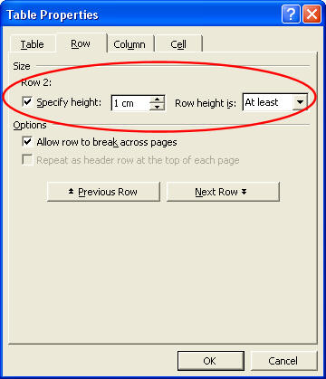
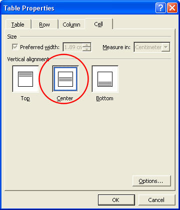
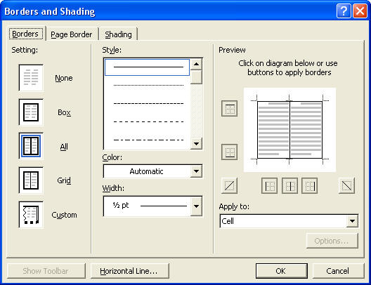
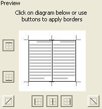
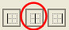

Free
computer Tutorials
|
Free
computer Tutorials
|
|
 home home |
|
||||
|
This lesson is part of an ongoing tutorial. Click here for the first part: How to create a Table How to Format your Microsoft Word TablesOur Table from the previous section looks OK. At the moment, it looks like this: But we could make the secons row of cells a bit bigger, and remove the internal borders from the top row. We'll start with resizing the table cells.

Your table will now look like the one below: As you can see, although we changed the height of the row, the numbers stayed where they were. To place the numbers in the middle of the row, do the following
 Click the OK button when you have finished. Your text will be centred in the row:
Remove Internal Borders in a TableOnly one last thing to do, and that's remove the borders from the inside of the top row. To remove any borders you want, again you need the Table Properties dialogue box . · First, highlight just the top row 
 The icon to click on is the middle one of the icons on the bottom row. This one below, the one with the red circle around it.:  Click on the icon with your left mouse button. Then click OK to get back to the Table Properties dialogue box. Click OK on the Table Properties dialogue box to return to your document. The top row of your table will have it's interior borders removed. It will now look like this: Except, the borders don't look as though they have been removed. Don't worry: they have. Word gives you a faint outline of where the borders used to be. These faint lines won't print out. You can see what your table really looks like by clicking File from the menu bar. Then click Print preview from the drop down menu. When you zoom in close, you can see the difference between the two:
You can see that in the Print Preview version on the right, the interior lines are not displayed. In your document, however, you can see the faint lines where the borders used to be. The print preview is the real version, what it will look like printed out.
In the next section, we'll see how to design a more complex table. |
|||||
|